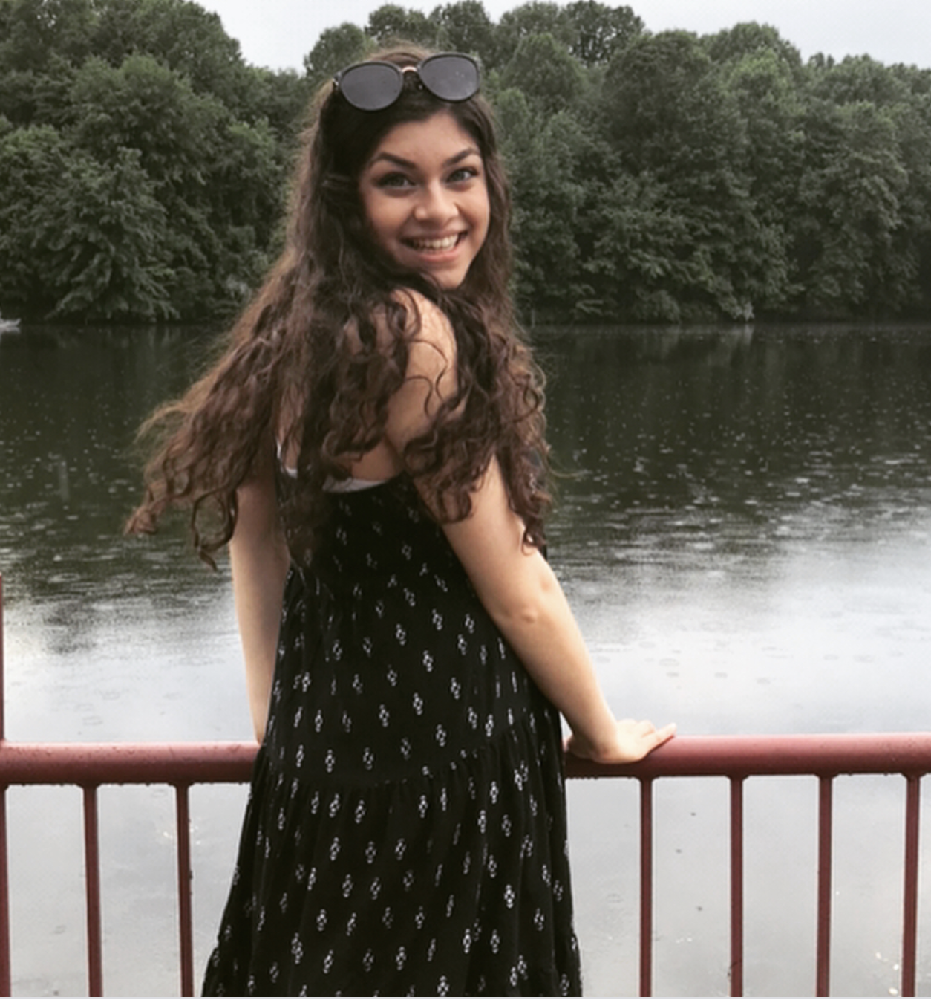

Who I am
Hi! I'm Mira, a senior at Carnegie Mellon studying Information Systems & Human Computer Interaction.
I'm deeply interested in pushing the forefront of technology and design, and discovering how doing so can create social good.
Contact me here if you know of any opportunities of interest!
Other things that I do...
• I've been a computer science TA for three semesters, which has been one of the most rewarding experiences I've had in college.
• I served as a content creator for CS Academy for a semester, which was also incredibly fulfilling.
• Believe it or not, I do things other than coding and prototyping! In fact, I'm hugely passionate about theater. I even won Best Leading Actress in the State of New Jersey for a show I did in high school!
• I love to sing as well; here's a cover I did that was featured on CMU's Student Affairs page.